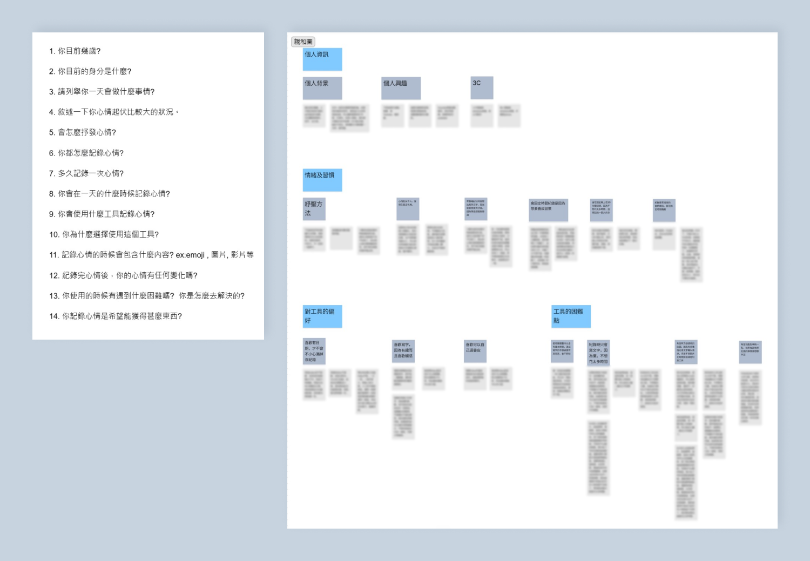
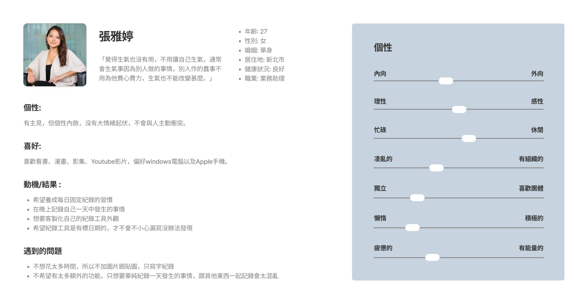
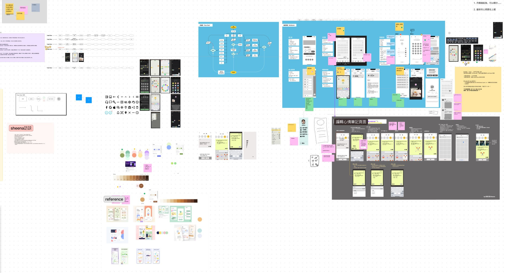

專案背景
這是與一同參與 UI 線上課程的8位同學們共同完成的專案，我在該專案中主要負責項目為「使用者訪談及人物誌撰寫」、「UI 設計」、「設計元件製作與整理」，以及「UX 說明與工程交付文件製作」。
Why - 選擇主題的原由
- 保持心情愉快對生活的重要性
- 現代人大多長時間對外分享，容易造成社交上的焦慮，需要一個自我探討、與自己對話的空間。
Who - 目標族群
為了確定該應用程式的目標族群，我們決定進行使用者訪談，首先，共同決定了14道題目，之後便各自進行了使用者訪談，並依據訪談內容製作了親和圖以及人物誌。
* 下圖部分內容經模糊處理
人物誌
What - 產品特性
分析市面上常見的心情 App後，我們觀察到他們有以下共通點 :
- 首頁簡化資訊量，專注在最重要的任務 將新增日記的功能放在顯眼之處
- 圖像代替打字 以表情符號代表當天心情
- 視覺化呈現紀錄的數量多寡 使用日曆、圖表等方式
透過分析競品我們觀察到心情紀錄需隨手記、簡單、快速。
此外，在使用者訪談也顯示，使用者偏好快速簡短的紀錄方式，不想花太多時間在記錄上面，希望就算出外過夜，也能輕鬆攜帶作紀錄。
因此，設計為手機應用程式會最為適合使用者做心情紀錄的工具。
How - 產品如何運作
User task : Ａ小姐今天今天比較忙，還被主管特別唸了一番覺得心累。下班後去運動心情變好點，晚上想要記下今天的心情跟拍下的照片，想要之後可回顧，順便看自己這個月心情統計如何。
Task flow :
開啟App
選擇心情
編輯日記
完成編輯
看心情總覽
專案目標
我們希望 Mood Wave 能達到以下幾個重要目標 :
只需要使用預設心情符號就能記錄。
加入成就系統來增加持續使用的動力。
提供報表快速看到月度/年度回顧。
討論過程
此項專案總計花了約2周的時間進行製作，在前期規劃階段，我們利用了兩場會議進行產品的方向討論，內容包括競品分析、使用者訪談及人物誌、產品定位、色彩規劃、User Task、User Flow。在確定 Mood Wave 的產品方向後，我們接著在下一場會議中共同進行了 Wireframe 的構想及繪製，確立了產品的使用者介面架構。
設計策略
視覺上我們希望傳達讓人安心的印象，讓使用者像是來到一個放鬆、能夠與自己進行對話的空間。因此在色彩上我們選用彩度偏低的暖色，並在物件邊緣導入圓角，避免銳利、刺激的元素。在功能上，我們希望讓疲憊的使用者在一天的最後，能夠快速地記錄下自己的心情，在有空的時候也能夠回顧這些紀錄，並將這些動作變成一個習慣。
快速使用
在紀錄的功能上，為了達到能快速使用的目標，我們選擇讓使用者只需使用表情符號就能完成簡單的紀錄。希望加入更多內容的話，也能留下文字紀錄，並利用已經設定好的模板進行快速撰寫，例如快速記下自己當天吃的晚餐、或是今天閱讀的書籍，除了文字，也可以加入內建貼圖、或是自己所拍攝的照片讓紀錄更加豐富。
養成習慣
了鼓勵使用者養成紀錄習慣，我們採用類似遊戲成就系統的方式，每當使用者完成一篇記錄，便會累積經驗值，升級後就能解鎖新的貼圖作為獎勵。
回顧過去
為了讓使用者更方便回顧過往紀錄，除了在時間軸上會顯示每一天紀錄內容之外，我們也加入了「報表」功能，讓使用者能夠檢視一個月/年的紀錄資料，不僅僅是能重溫過往回憶，還能了解自己的心情分布及變化起伏，掌握個人的心理健康狀況。